1$\sqrt{-19}$
| $\displaystyle \sqrt{-19}$ | $\displaystyle =\sqrt{-1\times 19}$ | بالتحليل |
| $\displaystyle =\sqrt{-1}\times\sqrt{19}$ | خاصية ضرب الجذور التربيعية | |
| $\displaystyle =i\sqrt{19}$ | تعريف الجذر الرئيس للعدد $-1$ |
إذن: $\sqrt{-19}=i\sqrt{19}$
أجد قيمة الجذر الرئيس في كلٍّ ممّا يأتي بدلالة $i$:
| $\displaystyle \sqrt{-19}$ | $\displaystyle =\sqrt{-1\times 19}$ | بالتحليل |
| $\displaystyle =\sqrt{-1}\times\sqrt{19}$ | خاصية ضرب الجذور التربيعية | |
| $\displaystyle =i\sqrt{19}$ | تعريف الجذر الرئيس للعدد $-1$ |
إذن: $\sqrt{-19}=i\sqrt{19}$
| $\displaystyle \sqrt{\dfrac{-12}{25}}$ | $\displaystyle =\sqrt{-1\times\dfrac{12}{25}}$ | بالتحليل |
| $\displaystyle =\sqrt{-1}\times\dfrac{\sqrt{4\times3}}{\sqrt{25}}$ | خاصية ضرب الجذور التربيعية وجذر القسمة | |
| $\displaystyle =i\times\dfrac{2\sqrt{3}}{5}$ | تعريف الجذر الرئيس للعدد $-1$ | |
| $\displaystyle =\dfrac{2i\sqrt{3}}{5}$ | بالتبسيط |
إذن: $\sqrt{\dfrac{-12}{25}}=\dfrac{2i\sqrt{3}}{5}$
| $\displaystyle \sqrt{\dfrac{-9}{32}}$ | $\displaystyle =\sqrt{-1\times\dfrac{9}{32}}$ | بالتحليل |
| $\displaystyle =\sqrt{-1}\times\dfrac{\sqrt{9}}{\sqrt{16\times2}}$ | خاصية ضرب الجذور التربيعية وجذر القسمة | |
| $\displaystyle =i\times\dfrac{3}{4\sqrt{2}}$ | تعريف الجذر الرئيس للعدد $-1$ | |
| $\displaystyle =i\times\dfrac{3}{4\sqrt{2}}\times\dfrac{\sqrt{2}}{\sqrt{2}}$ | بضرب البسط والمقام في $\sqrt{2}$ | |
| $\displaystyle =\dfrac{3i\sqrt{2}}{8}$ | بالتبسيط |
إذن: $\sqrt{\dfrac{-9}{32}}=\dfrac{3i\sqrt{2}}{8}$
| $\displaystyle \sqrt{-53}$ | $\displaystyle =\sqrt{-1\times 53}$ | بالتحليل |
| $\displaystyle =\sqrt{-1}\times\sqrt{53}$ | خاصية ضرب الجذور التربيعية | |
| $\displaystyle =i\sqrt{53}$ | تعريف الجذر الرئيس للعدد $-1$ |
إذن: $\sqrt{-53}=i\sqrt{53}$
أجد ناتج كلٍّ ممّا يأتي في أبسط صورة بافتراض أنَّ $\sqrt{-1}=i$:
| $\displaystyle i^{26}$ | $\displaystyle =(i^2)^{13}$ | خاصية قوة القوة |
| $\displaystyle =(-1)^{13}$ | بالتبسيط: $i^2=-1$ | |
| $\displaystyle =-1$ | بالتبسيط: $(-1)^{13}=-1$ لأنَّ الأُس فردي |
إذن: $i^{26}=-1$
| $\displaystyle i^{39}$ | $\displaystyle =(i^2)^{19}\times i$ | خاصية قوة القوة |
| $\displaystyle =(-1)^{19}\times i$ | بالتبسيط: $i^2=-1$ | |
| $\displaystyle =-i$ | بالتبسيط: $(-1)^{19}=-1$ |
إذن: $i^{39}=-i$
| $\displaystyle (i)(2i)(-7i)$ | $\displaystyle =(2\times-7)\times(i\times i\times i)$ | خاصيتا التبديل والتجميع للضرب |
| $\displaystyle =-14\,i^3$ | بالضرب | |
| $\displaystyle =-14\times i^2\times i$ | خاصية ضرب القوى | |
| $\displaystyle =-14\times(-1)\times i$ | بالتبسيط: $i^2=-1$ | |
| $\displaystyle =14i$ | بالتبسيط |
إذن: $(i)(2i)(-7i)=14i$
| $\displaystyle \sqrt{-6}\times\sqrt{-6}$ | $\displaystyle =\sqrt{-1\times6}\times\sqrt{-1\times6}$ | بالتحليل |
| $\displaystyle =(\sqrt{-1}\times\sqrt{6})\times(\sqrt{-1}\times\sqrt{6})$ | خاصية ضرب الجذور التربيعية | |
| $\displaystyle =(i\times\sqrt{6})\times(i\times\sqrt{6})$ | بافتراض أنَّ $\sqrt{-1}=i$ | |
| $\displaystyle =(i\times i)\times(\sqrt{6}\times\sqrt{6})$ | خاصيتا التبديل والتجميع للضرب | |
| $\displaystyle =i^2\times 6$ | بالضرب | |
| $\displaystyle =-1\times 6=-6$ | بالتبسيط: $i^2=-1$ |
إذن: $\sqrt{-6}\times\sqrt{-6}=-6$
| $\displaystyle \sqrt{-4}\times\sqrt{-8}$ | $\displaystyle =\sqrt{-1\times4}\times\sqrt{-1\times8}$ | بالتحليل |
| $\displaystyle =(\sqrt{-1}\times\sqrt{4})\times(\sqrt{-1}\times\sqrt{8})$ | خاصية ضرب الجذور التربيعية | |
| $\displaystyle =(i\times\sqrt{4})\times(i\times\sqrt{8})$ | بافتراض أنَّ $\sqrt{-1}=i$ | |
| $\displaystyle =(i\times i)\times(\sqrt{4}\times\sqrt{8})$ | خاصيتا التبديل والتجميع للضرب | |
| $\displaystyle =i^2\times\sqrt{32}$ | خاصية ضرب الجذور التربيعية | |
| $\displaystyle =-1\times4\sqrt{2}=-4\sqrt{2}$ | بالتبسيط: $i^2=-1$ ، $\sqrt{32}=4\sqrt2$ |
إذن: $\sqrt{-4}\times\sqrt{-8}=-4\sqrt{2}$
| $\displaystyle 2i\times\sqrt{-9}$ | $\displaystyle =2i\times\sqrt{-1\times9}$ | بالتحليل |
| $\displaystyle =2i\times\sqrt{-1}\times\sqrt{9}$ | خاصية ضرب الجذور التربيعية | |
| $\displaystyle =2i\times i\times3$ | بافتراض أنَّ $\sqrt{-1}=i$ | |
| $\displaystyle =(2\times3)\times i\times i$ | خاصيتا التبديل والتجميع للضرب | |
| $\displaystyle =6i^2$ | بالضرب | |
| $\displaystyle =6\times-1=-6$ | بالتبسيط: $i^2=-1$ |
إذن: $2i\times\sqrt{-9}=-6$
أكتب في كلٍّ ممّا يأتي العدد المركّب $z$ بالصورة القياسية بافتراض أنَّ $\sqrt{-1}=i$:
| $\displaystyle z$ | $\displaystyle =\dfrac{2+\sqrt{-1\times4}}{2}$ | بالتحليل |
| $\displaystyle =\dfrac{2+\sqrt{-1}\times\sqrt{4}}{2}$ | خاصية ضرب الجذور التربيعية | |
| $\displaystyle =\dfrac{2+2i}{2}$ | بافتراض أنَّ $\sqrt{-1}=i$ | |
| $\displaystyle =\dfrac{2}{2}+\dfrac{2i}{2}$ | بقسمة كل حدّ على المقام | |
| $\displaystyle =1+i$ | بالتبسيط |
إذن: $z=1+i$
| $\displaystyle z$ | $\displaystyle =\dfrac{8+\sqrt{-1\times16}}{2}$ | بالتحليل |
| $\displaystyle =\dfrac{8+\sqrt{-1}\times\sqrt{16}}{2}$ | خاصية ضرب الجذور التربيعية | |
| $\displaystyle =\dfrac{8+4i}{2}$ | بافتراض أنَّ $\sqrt{-1}=i$ | |
| $\displaystyle =\dfrac{8}{2}+\dfrac{4i}{2}$ | بقسمة كل حدّ على المقام | |
| $\displaystyle =4+2i$ | بالتبسيط |
إذن: $z=4+2i$
| $\displaystyle z$ | $\displaystyle =\dfrac{10-\sqrt{-1\times25\times2}}{5}$ | بالتحليل |
| $\displaystyle =\dfrac{10-\sqrt{-1}\times\sqrt{25}\times\sqrt{2}}{5}$ | خاصية ضرب الجذور التربيعية | |
| $\displaystyle =\dfrac{10-5i\sqrt{2}}{5}$ | بافتراض أنَّ $\sqrt{-1}=i$ | |
| $\displaystyle =\dfrac{10}{5}-\dfrac{5i\sqrt{2}}{5}$ | بقسمة كل حدّ على المقام | |
| $\displaystyle =2-i\sqrt{2}$ | بالتبسيط |
إذن: $z=2-i\sqrt{2}$
أحدّد الجزء الحقيقي والجزء التخيّلي لكلٍّ من الأعداد المركّبة الآتية، ثمَّ أمثّلها جميعًا في المستوى المركّب نفسه:
الجزء الحقيقي: $2$ ، والجزء التخيّلي: $15$
يمثّل الزوج المرتّب $(2,\,15)$ العدد المركّب $z=2+15i$.
الجزء الحقيقي: $0$ ، والجزء التخيّلي: $10$
يمثّل الزوج المرتّب $(0,\,10)$ العدد المركّب $z=10i$.
الجزء الحقيقي: $-16$ ، والجزء التخيّلي: $-2$
يمثّل الزوج المرتّب $(-16,\,-2)$ العدد المركّب $z=-16-2i$.
التمثيل البياني للأعداد الثلاثة في المستوى المركّب نفسه:
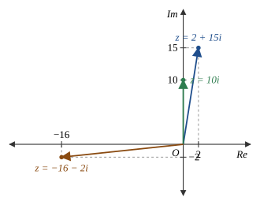
أمثّل العدد المركّب ومرافقه بيانيًّا في المستوى المركّب في كلٍّ ممّا يأتي:
مرافق العدد المركّب $z=-15+3i$ هو: $\bar z=-15-3i$.
يمثّل الزوج المرتّب $(-15,\,3)$ العدد المركّب $z$، ويمثّل الزوج المرتّب $(-15,\,-3)$ مرافقه $\bar z$.
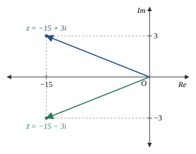
مرافق العدد المركّب $z=8-7i$ هو: $\bar z=8+7i$.
يمثّل الزوج المرتّب $(8,\,-7)$ العدد المركّب $z$، ويمثّل الزوج المرتّب $(8,\,7)$ مرافقه $\bar z$.
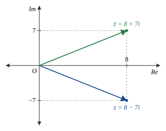
مرافق العدد المركّب $z=12+17i$ هو: $\bar z=12-17i$.
يمثّل الزوج المرتّب $(12,\,17)$ العدد المركّب $z$، ويمثّل الزوج المرتّب $(12,\,-17)$ مرافقه $\bar z$.
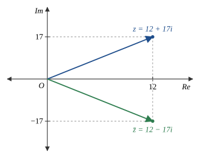
مرافق العدد المركّب $z=-3-25i$ هو: $\bar z=-3+25i$.
يمثّل الزوج المرتّب $(-3,\,-25)$ العدد المركّب $z$، ويمثّل الزوج المرتّب $(-3,\,25)$ مرافقه $\bar z$.
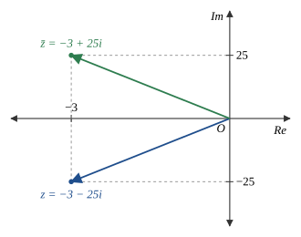
مرافق العدد المركّب $z=3i$ هو: $\bar z=-3i$.
يمثّل الزوج المرتّب $(0,\,3)$ العدد المركّب $z$، ويمثّل الزوج المرتّب $(0,\,-3)$ مرافقه $\bar z$.
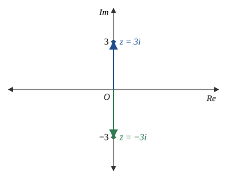
مرافق العدد المركّب $z=15=15+0i$ هو: $\bar z=15-0i=15$.
يمثّل الزوج المرتّب $(15,\,0)$ كلًّا من العدد $z$ ومرافقه $\bar z$؛ فالعدد الحقيقي يقع على المحور الحقيقي، وانعكاسه في المحور الحقيقي هو نفسه.
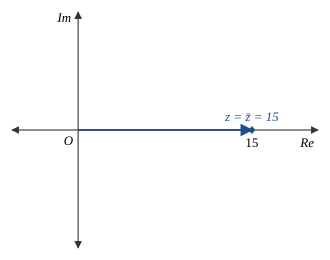
أجد $|z|$ و $\bar z$ لكلٍّ ممّا يأتي:
| $\displaystyle |z|$ | $\displaystyle =\sqrt{a^2+b^2}$ | صيغة مقياس العدد المركّب |
| $\displaystyle =\sqrt{(-5)^2+(5)^2}$ | بتعويض $a=-5,\ b=5$ | |
| $\displaystyle =\sqrt{50}=5\sqrt{2}$ | بالتبسيط | |
| $\displaystyle \bar z$ | $\displaystyle =-5-5i$ | تعريف مرافق العدد المركّب |
إذن: $|z|=5\sqrt2$ ، $\bar z=-5-5i$
| $\displaystyle |z|$ | $\displaystyle =\sqrt{a^2+b^2}$ | صيغة مقياس العدد المركّب |
| $\displaystyle =\sqrt{(3)^2+(3\sqrt{3})^2}$ | بتعويض $a=3,\ b=3\sqrt3$ | |
| $\displaystyle =\sqrt{9+27}=\sqrt{36}=6$ | بالتبسيط | |
| $\displaystyle \bar z$ | $\displaystyle =3-3i\sqrt{3}$ | تعريف مرافق العدد المركّب |
إذن: $|z|=6$ ، $\bar z=3-3i\sqrt3$
| $\displaystyle |z|$ | $\displaystyle =\sqrt{a^2+b^2}$ | صيغة مقياس العدد المركّب |
| $\displaystyle =\sqrt{(6)^2+(-8)^2}$ | بتعويض $a=6,\ b=-8$ | |
| $\displaystyle =\sqrt{100}=10$ | بالتبسيط | |
| $\displaystyle \bar z$ | $\displaystyle =6+8i$ | تعريف مرافق العدد المركّب |
إذن: $|z|=10$ ، $\bar z=6+8i$
أجد قيم كلٍّ من $x$ و $y$ الحقيقية التي تجعل كلًّا من المعادلات الآتية صحيحة:
| $\displaystyle x^2-1$ | $\displaystyle =8$ | بمساواة الجزأين الحقيقيين |
| $\displaystyle x^2$ | $\displaystyle =9$ | بجمع $1$ للطرفين |
| $\displaystyle x$ | $\displaystyle =\pm3$ | بأخذ الجذر التربيعي للطرفين |
| $\displaystyle 2y-5$ | $\displaystyle =9$ | بمساواة الجزأين التخيّليين |
| $\displaystyle 2y$ | $\displaystyle =14$ | بجمع $5$ للطرفين |
| $\displaystyle y$ | $\displaystyle =7$ | بحلّ المعادلة |
إذن: $x=3$ أو $x=-3$ ، $y=7$
| $\displaystyle 2x+3y$ | $\displaystyle =8 \quad\cdots(1)$ | بمساواة الجزأين الحقيقيين |
| $\displaystyle x-2y$ | $\displaystyle =-3 \quad\cdots(2)$ | بمساواة الجزأين التخيّليين |
| $\displaystyle x$ | $\displaystyle =2y-3$ | بحلّ المعادلة $(2)$ بالنسبة إلى $x$ |
| $\displaystyle 2(2y-3)+3y$ | $\displaystyle =8$ | بالتعويض في المعادلة $(1)$ |
| $\displaystyle 7y-6$ | $\displaystyle =8$ | بالتبسيط |
| $\displaystyle y$ | $\displaystyle =2$ | بحلّ المعادلة |
| $\displaystyle x$ | $\displaystyle =2(2)-3=1$ | بتعويض $y=2$ |
إذن: $x=1$ ، $y=2$
| $\displaystyle y-3$ | $\displaystyle =9$ | بمساواة الجزأين الحقيقيين |
| $\displaystyle y$ | $\displaystyle =12$ | بحلّ المعادلة |
| $\displaystyle 3x+2$ | $\displaystyle =y-4$ | بمساواة الجزأين التخيّليين |
| $\displaystyle 3x+2$ | $\displaystyle =12-4=8$ | بتعويض $y=12$ |
| $\displaystyle 3x$ | $\displaystyle =6$ | بطرح $2$ من الطرفين |
| $\displaystyle x$ | $\displaystyle =2$ | بحلّ المعادلة |
إذن: $x=2$ ، $y=12$
| $\displaystyle (3x+5y)+i(2x-5y)$ | $\displaystyle =7+3i$ | بكتابة الطرف الأيمن بالصورة القياسية |
| $\displaystyle 3x+5y$ | $\displaystyle =7 \quad\cdots(1)$ | بمساواة الجزأين الحقيقيين |
| $\displaystyle 2x-5y$ | $\displaystyle =3 \quad\cdots(2)$ | بمساواة الجزأين التخيّليين |
| $\displaystyle 5x$ | $\displaystyle =10$ | بجمع المعادلتين $(1)$ و $(2)$ |
| $\displaystyle x$ | $\displaystyle =2$ | بحلّ المعادلة |
| $\displaystyle 3(2)+5y$ | $\displaystyle =7$ | بتعويض $x=2$ في المعادلة $(1)$ |
| $\displaystyle 5y$ | $\displaystyle =1 \Rightarrow y=\dfrac{1}{5}$ | بحلّ المعادلة |
إذن: $x=2$ ، $y=\dfrac{1}{5}$
أجد سعة كلٍّ من الأعداد المركّبة الآتية، وأقرّب إجابتي إلى أقرب منزلتين عشريتين:
العدد $z=1=1+0i$ يُمثَّل بالنقطة $(1,\,0)$ الواقعة على الجزء الموجب من المحور الحقيقي.
إذن القطعة المستقيمة الواصلة بين نقطة الأصل والنقطة $(1,\,0)$ تنطبق على المحور الحقيقي الموجب، فقياس الزاوية بينهما $0$.
إذن: $\text{Arg}(z)=0$
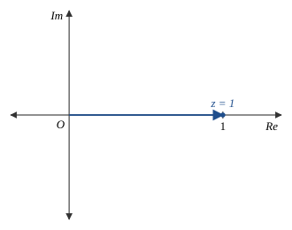
العدد $z=3i=0+3i$ يُمثَّل بالنقطة $(0,\,3)$ الواقعة على الجزء الموجب من المحور التخيّلي.
الزاوية بين المحور الحقيقي الموجب والمحور التخيّلي الموجب قائمة، وقياسها $\dfrac{\pi}{2}$ (بعكس اتجاه دوران عقارب الساعة).
| $\displaystyle \text{Arg}(z)$ | $\displaystyle =\dfrac{\pi}{2}\approx 1.57$ | باستعمال الآلة الحاسبة |
إذن: $\text{Arg}(z)=\dfrac{\pi}{2}\approx1.57$
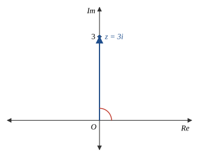
بالنظر إلى التمثيل البياني للعدد المركّب $z=-5-5i$ في الشكل المجاور، ألاحظ أنَّه يقع في الربع الثالث.
| $\displaystyle \text{Arg}(z)$ | $\displaystyle =-\left(\pi-\tan^{-1}\left(\frac{b}{a}\right)\right)$ | سعة العدد المركّب في الربع الثالث |
| $\displaystyle =-\left(\pi-\tan^{-1}\left(\frac{5}{5}\right)\right)$ | بتعويض $a=5,\ b=5$ | |
| $\displaystyle =-\left(\pi-\dfrac{\pi}{4}\right)=-\dfrac{3\pi}{4}$ | بالتبسيط: زاوية خاصة | |
| $\displaystyle \approx -2.36$ | باستعمال الآلة الحاسبة |
إذن: $\text{Arg}(z)\approx -2.36$
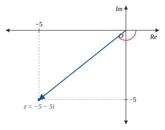
بالنظر إلى التمثيل البياني للعدد المركّب $z=1-i\sqrt{3}$ في الشكل المجاور، ألاحظ أنَّه يقع في الربع الرابع.
| $\displaystyle \text{Arg}(z)$ | $\displaystyle =-\tan^{-1}\left(\frac{b}{a}\right)$ | سعة العدد المركّب في الربع الرابع |
| $\displaystyle =-\tan^{-1}\left(\frac{\sqrt3}{1}\right)$ | بتعويض $a=1,\ b=\sqrt3$ | |
| $\displaystyle =-\dfrac{\pi}{3}$ | بالتبسيط: زاوية خاصة | |
| $\displaystyle \approx -1.05$ | باستعمال الآلة الحاسبة |
إذن: $\text{Arg}(z)\approx -1.05$
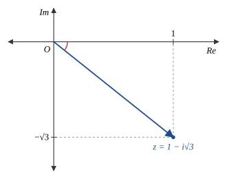
بالنظر إلى التمثيل البياني للعدد المركّب $z=6\sqrt3+6i$ في الشكل المجاور، ألاحظ أنَّه يقع في الربع الأول.
| $\displaystyle \text{Arg}(z)$ | $\displaystyle =\tan^{-1}\left(\frac{b}{a}\right)$ | سعة العدد المركّب في الربع الأول |
| $\displaystyle =\tan^{-1}\left(\frac{6}{6\sqrt3}\right)$ | بتعويض $a=6\sqrt3,\ b=6$ | |
| $\displaystyle =\tan^{-1}\left(\dfrac{1}{\sqrt3}\right)=\dfrac{\pi}{6}$ | بالتبسيط: زاوية خاصة | |
| $\displaystyle \approx 0.52$ | باستعمال الآلة الحاسبة |
إذن: $\text{Arg}(z)\approx 0.52$
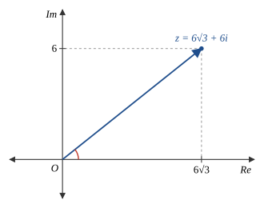
بالنظر إلى التمثيل البياني للعدد المركّب $z=3-4i$ في الشكل المجاور، ألاحظ أنَّه يقع في الربع الرابع.
| $\displaystyle \text{Arg}(z)$ | $\displaystyle =-\tan^{-1}\left(\frac{b}{a}\right)$ | سعة العدد المركّب في الربع الرابع |
| $\displaystyle =-\tan^{-1}\left(\frac{4}{3}\right)$ | بتعويض $a=3,\ b=4$ | |
| $\displaystyle \approx -0.93$ | باستعمال الآلة الحاسبة |
إذن: $\text{Arg}(z)\approx -0.93$
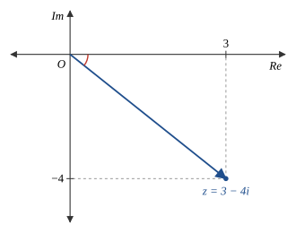
بالنظر إلى التمثيل البياني للعدد المركّب $z=-12+5i$ في الشكل المجاور، ألاحظ أنَّه يقع في الربع الثاني.
| $\displaystyle \text{Arg}(z)$ | $\displaystyle =\pi-\tan^{-1}\left(\frac{b}{a}\right)$ | سعة العدد المركّب في الربع الثاني |
| $\displaystyle =\pi-\tan^{-1}\left(\frac{5}{12}\right)$ | بتعويض $a=12,\ b=5$ | |
| $\displaystyle \approx 2.75$ | باستعمال الآلة الحاسبة |
إذن: $\text{Arg}(z)\approx 2.75$
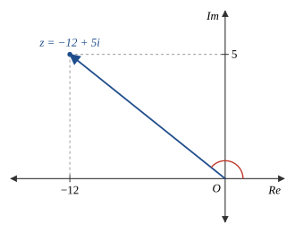
بالنظر إلى التمثيل البياني للعدد المركّب $z=-58-93i$ في الشكل المجاور، ألاحظ أنَّه يقع في الربع الثالث.
| $\displaystyle \text{Arg}(z)$ | $\displaystyle =-\left(\pi-\tan^{-1}\left(\frac{b}{a}\right)\right)$ | سعة العدد المركّب في الربع الثالث |
| $\displaystyle =-\left(\pi-\tan^{-1}\left(\frac{93}{58}\right)\right)$ | بتعويض $a=58,\ b=93$ | |
| $\displaystyle \approx -2.13$ | باستعمال الآلة الحاسبة |
إذن: $\text{Arg}(z)\approx -2.13$
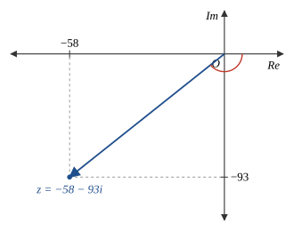
| $\displaystyle z$ | $\displaystyle =2i-4=-4+2i$ | بكتابة العدد بالصورة القياسية |
بالنظر إلى التمثيل البياني للعدد المركّب $z=-4+2i$ في الشكل المجاور، ألاحظ أنَّه يقع في الربع الثاني.
| $\displaystyle \text{Arg}(z)$ | $\displaystyle =\pi-\tan^{-1}\left(\frac{b}{a}\right)$ | سعة العدد المركّب في الربع الثاني |
| $\displaystyle =\pi-\tan^{-1}\left(\frac{2}{4}\right)$ | بتعويض $a=4,\ b=2$ | |
| $\displaystyle \approx 2.68$ | باستعمال الآلة الحاسبة |
إذن: $\text{Arg}(z)\approx 2.68$
أكتب في كلٍّ ممّا يأتي العدد المركّب $z$ بالصورة المثلثية:
| $\displaystyle z$ | $\displaystyle =r(\cos\theta+i\sin\theta)$ | الصورة المثلثية للعدد المركّب |
| $\displaystyle =2\left(\cos\frac{\pi}{2}+i\sin\frac{\pi}{2}\right)$ | بتعويض $r=2,\ \theta=\frac{\pi}{2}$ |
إذن، الصورة المثلثية للعدد المركّب $z$ هي: $z=2\left(\cos\frac{\pi}{2}+i\sin\frac{\pi}{2}\right)$
| $\displaystyle z$ | $\displaystyle =r(\cos\theta+i\sin\theta)$ | الصورة المثلثية للعدد المركّب |
| $\displaystyle =3\left(\cos\frac{\pi}{3}+i\sin\frac{\pi}{3}\right)$ | بتعويض $r=3,\ \theta=\frac{\pi}{3}$ |
إذن، الصورة المثلثية للعدد المركّب $z$ هي: $z=3\left(\cos\frac{\pi}{3}+i\sin\frac{\pi}{3}\right)$
| $\displaystyle z$ | $\displaystyle =r(\cos\theta+i\sin\theta)$ | الصورة المثلثية للعدد المركّب |
| $\displaystyle =7\left(\cos\frac{5\pi}{6}+i\sin\frac{5\pi}{6}\right)$ | بتعويض $r=7,\ \theta=\frac{5\pi}{6}$ |
إذن، الصورة المثلثية للعدد المركّب $z$ هي: $z=7\left(\cos\frac{5\pi}{6}+i\sin\frac{5\pi}{6}\right)$
| $\displaystyle z$ | $\displaystyle =r(\cos\theta+i\sin\theta)$ | الصورة المثلثية للعدد المركّب |
| $\displaystyle =1\left(\cos\frac{\pi}{4}+i\sin\frac{\pi}{4}\right)$ | بتعويض $r=1,\ \theta=\frac{\pi}{4}$ | |
| $\displaystyle =\cos\frac{\pi}{4}+i\sin\frac{\pi}{4}$ | بالتبسيط |
إذن: $z=\cos\frac{\pi}{4}+i\sin\frac{\pi}{4}$
الخطوة 1: أجد مقياس العدد المركّب $z$.
| $\displaystyle r$ | $\displaystyle =\sqrt{6^2+0^2}=6$ | صيغة مقياس العدد المركّب |
الخطوة 2: أجد سعة العدد المركّب $z$.
العدد $z=6$ يقع على الجزء الموجب من المحور الحقيقي، إذن: $\text{Arg}(z)=0$.
الخطوة 3: أكتب العدد المركّب $z$ بالصورة المثلثية.
| $\displaystyle z$ | $\displaystyle =6(\cos0+i\sin0)$ | بتعويض $r=6,\ \theta=0$ |
إذن: $z=6(\cos0+i\sin0)$
الخطوة 1: أجد مقياس العدد المركّب $z$.
| $\displaystyle r$ | $\displaystyle =\sqrt{1^2+1^2}=\sqrt{2}$ | صيغة مقياس العدد المركّب |
الخطوة 2: أجد سعة العدد المركّب $z$.
بما أنَّ العدد المركّب $z$ يقع في الربع الأول، فإنَّ:
| $\displaystyle \text{Arg}(z)$ | $\displaystyle =\tan^{-1}\left(\frac{b}{a}\right)$ | سعة العدد المركّب في الربع الأول |
| $\displaystyle =\tan^{-1}\left(\frac{1}{1}\right)=\frac{\pi}{4}$ | بتعويض $a=1,\ b=1$ |
الخطوة 3: أكتب العدد المركّب $z$ بالصورة المثلثية.
| $\displaystyle z$ | $\displaystyle =\sqrt{2}\left(\cos\frac{\pi}{4}+i\sin\frac{\pi}{4}\right)$ | بتعويض $r=\sqrt2,\ \theta=\frac{\pi}{4}$ |
إذن: $z=\sqrt2\left(\cos\frac{\pi}{4}+i\sin\frac{\pi}{4}\right)$
أحلّ المسائل الآتية:
يبيّن الشكل في الكتاب التمثيل البياني للعدد المركّب $z_1$ في المستوى المركّب (النقطة $(4\sqrt3,\,-4)$). أجد العدد المركّب $z_2$ الذي يحقّق: $|z_2|=40$ و $\text{Arg}\,z_2=\text{Arg}\,\bar z_1$.
من الشكل المعطى: يمثّل الزوج المرتّب $(4\sqrt3,\,-4)$ العدد المركّب $z_1$، إذن: $z_1=4\sqrt3-4i$.
| $\displaystyle \bar z_1$ | $\displaystyle =4\sqrt3+4i$ | تعريف مرافق العدد المركّب |
العدد $\bar z_1$ يقع في الربع الأول، إذن:
| $\displaystyle \text{Arg}(\bar z_1)$ | $\displaystyle =\tan^{-1}\left(\frac{b}{a}\right)$ | سعة العدد المركّب في الربع الأول |
| $\displaystyle =\tan^{-1}\left(\frac{4}{4\sqrt3}\right)$ | بتعويض $a=4\sqrt3,\ b=4$ | |
| $\displaystyle =\tan^{-1}\left(\frac{1}{\sqrt3}\right)$ | بالتبسيط | |
| $\displaystyle =\frac{\pi}{6}$ | بالتبسيط | |
| $\displaystyle z_2$ | $\displaystyle =r(\cos\theta+i\sin\theta)$ | الصورة المثلثية للعدد المركّب |
| $\displaystyle =40\left(\cos\frac{\pi}{6}+i\sin\frac{\pi}{6}\right)$ | بتعويض $r=40,\ \theta=\frac{\pi}{6}$ | |
| $\displaystyle =40\left(\frac{\sqrt3}{2}+\frac{1}{2}i\right)$ | $\cos\frac{\pi}{6}=\frac{\sqrt3}{2}$ ، $\sin\frac{\pi}{6}=\frac12$ | |
| $\displaystyle =20\sqrt3+20i$ | خاصية التوزيع |
إذن: $z_2=20\sqrt3+20i$ ، أو بالصورة المثلثية: $z_2=40\left(\cos\frac{\pi}{6}+i\sin\frac{\pi}{6}\right)$
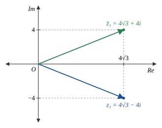
بافتراض أنَّ: $z=a+ib$ ، حيث: $|z|=10\sqrt2$ ، وأنَّ: $\text{Arg}(z)=\dfrac{3\pi}{4}$:
| $\displaystyle a$ | $\displaystyle =r\cos\theta$ | من الصورة المثلثية |
| $\displaystyle =10\sqrt2\cos\frac{3\pi}{4}$ | بتعويض $r=10\sqrt2,\ \theta=\frac{3\pi}{4}$ | |
| $\displaystyle =10\sqrt2\times\left(-\frac{\sqrt2}{2}\right)$ | بالتبسيط | |
| $\displaystyle =-10$ | بالتبسيط | |
| $\displaystyle b$ | $\displaystyle =r\sin\theta$ | من الصورة المثلثية |
| $\displaystyle =10\sqrt2\sin\frac{3\pi}{4}$ | بتعويض $r=10\sqrt2,\ \theta=\frac{3\pi}{4}$ | |
| $\displaystyle =10\sqrt2\times\frac{\sqrt2}{2}$ | بالتبسيط | |
| $\displaystyle =10$ | بالتبسيط |
إذن: $z=-10+10i$
| $\displaystyle \bar z$ | $\displaystyle =-10-10i$ | تعريف مرافق العدد المركّب |
العدد $\bar z$ يقع في الربع الثالث، إذن:
| $\displaystyle \text{Arg}(\bar z)$ | $\displaystyle =-\left(\pi-\tan^{-1}\left(\frac{10}{10}\right)\right)$ | سعة العدد المركّب في الربع الثالث |
| $\displaystyle =-\left(\pi-\frac{\pi}{4}\right)$ | بالتبسيط | |
| $\displaystyle =-\frac{3\pi}{4}$ | بالتبسيط |
كلٌّ من $z$ و $\bar z$ يصنع مع الجزء السالب من المحور الحقيقي زاوية قياسها $\pi-\frac{3\pi}{4}=\frac{\pi}{4}$، والزاويتان على جانبي المحور، إذن:
| $\displaystyle \theta$ | $\displaystyle =\frac{\pi}{4}+\frac{\pi}{4}=\frac{\pi}{2}$ | بجمع الزاويتين |
إذن: قياس الزاوية الصغرى المحصورة بين $z$ و $\bar z$ هو $\dfrac{\pi}{2}$
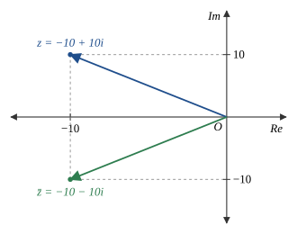
إذا كان: $z=-8+8i$ ، فأجد كلًّا ممّا يأتي:
| $\displaystyle |z|$ | $\displaystyle =\sqrt{a^2+b^2}$ | صيغة مقياس العدد المركّب |
| $\displaystyle =\sqrt{(-8)^2+(8)^2}=\sqrt{128}=8\sqrt2$ | بتعويض $a=-8,\ b=8$ |
إذن: $|z|=8\sqrt2$
العدد $z=-8+8i$ يقع في الربع الثاني.
| $\displaystyle \text{Arg}(z)$ | $\displaystyle =\pi-\tan^{-1}\left(\frac{b}{a}\right)$ | سعة العدد المركّب في الربع الثاني |
| $\displaystyle =\pi-\tan^{-1}\left(\frac{8}{8}\right)$ | بتعويض $a=8,\ b=8$ | |
| $\displaystyle =\pi-\frac{\pi}{4}$ | بالتبسيط | |
| $\displaystyle =\frac{3\pi}{4}$ | بالتبسيط |
إذن: $\text{Arg}(z)=\dfrac{3\pi}{4}\approx2.36$
| $\displaystyle \bar z$ | $\displaystyle =-8-8i$ | تعريف مرافق العدد المركّب |
| $\displaystyle |\bar z|$ | $\displaystyle =\sqrt{(-8)^2+(-8)^2}=\sqrt{128}=8\sqrt2$ | صيغة مقياس العدد المركّب |
إذن: $|\bar z|=8\sqrt2$ ، وألاحظ أنَّ $|\bar z|=|z|$
العدد $\bar z=-8-8i$ يقع في الربع الثالث.
| $\displaystyle \text{Arg}(\bar z)$ | $\displaystyle =-\left(\pi-\tan^{-1}\left(\frac{b}{a}\right)\right)$ | سعة العدد المركّب في الربع الثالث |
| $\displaystyle =-\left(\pi-\tan^{-1}\left(\frac{8}{8}\right)\right)$ | بتعويض $a=8,\ b=8$ | |
| $\displaystyle =-\left(\pi-\frac{\pi}{4}\right)$ | بالتبسيط | |
| $\displaystyle =-\frac{3\pi}{4}$ | بالتبسيط |
إذن: $\text{Arg}(\bar z)=-\dfrac{3\pi}{4}\approx-2.36$ ، وألاحظ أنَّ $\text{Arg}(\bar z)=-\text{Arg}(z)$
تبرير: إذا كان: $\text{Arg}(5+2i)=\alpha$ ، فأجد سعة كلٍّ ممّا يأتي بدلالة $\alpha$، ثمَّ أبرّر إجابتي:
العدد $5+2i$ يقع في الربع الأول، إذن: $\alpha=\text{Arg}(5+2i)=\tan^{-1}\left(\dfrac{2}{5}\right)$.
العدد $-5-2i$ يقع في الربع الثالث، حيث $a=5,\ b=2$.
| $\displaystyle \text{Arg}(-5-2i)$ | $\displaystyle =-\left(\pi-\tan^{-1}\left(\frac{2}{5}\right)\right)$ | سعة العدد المركّب في الربع الثالث |
| $\displaystyle =-(\pi-\alpha)=\alpha-\pi$ | بتعويض $\tan^{-1}\left(\frac25\right)=\alpha$ |
إذن: $\text{Arg}(-5-2i)=\alpha-\pi$
العدد $5-2i$ هو مرافق العدد $5+2i$، ويقع في الربع الرابع.
| $\displaystyle \text{Arg}(5-2i)$ | $\displaystyle =-\tan^{-1}\left(\frac{2}{5}\right)$ | سعة العدد المركّب في الربع الرابع |
| $\displaystyle =-\alpha$ | بتعويض $\tan^{-1}\left(\frac25\right)=\alpha$ |
إذن: $\text{Arg}(5-2i)=-\alpha$ ؛ لأنَّ المرافق انعكاس للعدد في المحور الحقيقي
العدد $-5+2i$ يقع في الربع الثاني.
| $\displaystyle \text{Arg}(-5+2i)$ | $\displaystyle =\pi-\tan^{-1}\left(\frac{2}{5}\right)$ | سعة العدد المركّب في الربع الثاني |
| $\displaystyle =\pi-\alpha$ | بتعويض $\tan^{-1}\left(\frac25\right)=\alpha$ |
إذن: $\text{Arg}(-5+2i)=\pi-\alpha$
العدد $2+5i$ يقع في الربع الأول.
| $\displaystyle \text{Arg}(2+5i)$ | $\displaystyle =\tan^{-1}\left(\frac{5}{2}\right)$ | سعة العدد المركّب في الربع الأول |
في المثلث القائم الذي طولا ضلعي القائمة فيه $2$ و $5$: الزاويتان الحادّتان قياساهما $\tan^{-1}\left(\frac25\right)$ و $\tan^{-1}\left(\frac52\right)$، وهما متتامّتان (مجموعهما $\frac{\pi}{2}$).
| $\displaystyle =\frac{\pi}{2}-\tan^{-1}\left(\frac{2}{5}\right)$ | الزاويتان الحادّتان في المثلث القائم متتامّتان | |
| $\displaystyle =\frac{\pi}{2}-\alpha$ | بالتبسيط |
إذن: $\text{Arg}(2+5i)=\dfrac{\pi}{2}-\alpha$
العدد $-2+5i$ يقع في الربع الثاني.
| $\displaystyle \text{Arg}(-2+5i)$ | $\displaystyle =\pi-\tan^{-1}\left(\frac{5}{2}\right)$ | سعة العدد المركّب في الربع الثاني |
| $\displaystyle =\pi-\left(\frac{\pi}{2}-\alpha\right)$ | من السؤال 55: $\tan^{-1}\left(\frac52\right)=\frac{\pi}{2}-\alpha$ | |
| $\displaystyle =\frac{\pi}{2}+\alpha$ | بالتبسيط |
إذن: $\text{Arg}(-2+5i)=\dfrac{\pi}{2}+\alpha$
| $\displaystyle |z|$ | $\displaystyle =\sqrt{a^2+b^2}=\sqrt{5^2+m^2}$ | صيغة مقياس العدد المركّب، $a=5,\ b=m$ |
| $\displaystyle \sqrt{25+m^2}$ | $\displaystyle =6$ | المعطى: $|z|=6$ |
| $\displaystyle 25+m^2$ | $\displaystyle =36$ | بتربيع الطرفين |
| $\displaystyle m^2$ | $\displaystyle =11 \Rightarrow m=\pm\sqrt{11}$ | بحلّ المعادلة |
بما أنَّ $0<\text{Arg}(z)<\frac{\pi}{2}$ فإنَّ $z$ يقع في الربع الأول، إذن جزؤه التخيّلي $m$ موجب.
إذن: $m=\sqrt{11}$
| $\displaystyle |z|$ | $\displaystyle =\sqrt{5^2+(3k)^2}$ | صيغة مقياس العدد المركّب، $a=5,\ b=3k$ |
| $\displaystyle \sqrt{25+9k^2}$ | $\displaystyle =13$ | المعطى: $|z|=13$ |
| $\displaystyle 25+9k^2$ | $\displaystyle =169$ | بتربيع الطرفين |
| $\displaystyle 9k^2$ | $\displaystyle =144 \Rightarrow k^2=16$ | بالتبسيط |
| $\displaystyle k$ | $\displaystyle =\pm4$ | بأخذ الجذر التربيعي للطرفين |
التبرير: لا يوجد شرط على موقع $z$، وكلتا القيمتين تحقّق المعطى:
عندما $k=4$: $z=5+12i$ ، و $|z|=\sqrt{25+144}=13$. وعندما $k=-4$: $z=5-12i$ ، و $|z|=\sqrt{25+144}=13$ (العددان مترافقان ولهما المقياس نفسه).
إذن: $k=4$ أو $k=-4$
تحدٍّ: بافتراض أنَّ $z_1$ عدد مركّب، مقياسه $4\sqrt5$، وسعته: $\theta=\tan^{-1}(2)$:
بما أنَّ $\theta=\tan^{-1}(2)$ تقع في الفترة $\left(0,\frac{\pi}{2}\right)$، فإنَّ $z_1$ يقع في الربع الأول، و $\tan\theta=2=\dfrac{2}{1}$.
أرسم مثلثًا قائمًا طولا ضلعي القائمة فيه $1$ و $2$، فيكون طول الوتر $\sqrt{1^2+2^2}=\sqrt5$، ومنه: $\cos\theta=\dfrac{1}{\sqrt5}$ ، $\sin\theta=\dfrac{2}{\sqrt5}$.
| $\displaystyle a$ | $\displaystyle =r\cos\theta=4\sqrt5\times\frac{1}{\sqrt5}=4$ | بتعويض $r=4\sqrt5$ |
| $\displaystyle b$ | $\displaystyle =r\sin\theta=4\sqrt5\times\frac{2}{\sqrt5}=8$ | بتعويض $r=4\sqrt5$ |
تحقّق: $|z_1|=\sqrt{4^2+8^2}=\sqrt{80}=4\sqrt5$ ، و $\tan^{-1}\left(\frac84\right)=\tan^{-1}(2)$.
إذن: $z_1=4+8i$
أمثّل الرؤوس في المستوى المركّب:
| $\displaystyle z_1=4+8i$ | $\displaystyle \to(4,\,8)$ | يمثّل الزوج المرتّب |
| $\displaystyle z_2=7-3i$ | $\displaystyle \to(7,\,-3)$ | يمثّل الزوج المرتّب |
| $\displaystyle z_3=-5+i$ | $\displaystyle \to(-5,\,1)$ | يمثّل الزوج المرتّب |
أرسم مستطيلًا أضلاعه موازية للمحورين يحيط بالمثلث، رؤوسه: $(-5,8),\ (7,8),\ (7,-3),\ (-5,-3)$.
| $\displaystyle A_{\text{rect}}$ | $\displaystyle =12\times11=132$ | الطول $7-(-5)=12$ ، العرض $8-(-3)=11$ |
| $\displaystyle A_1$ | $\displaystyle =\frac12\times9\times7=31.5$ | المثلث القائم بين $z_3$ و $z_1$: ضلعاه $9$ و $7$ |
| $\displaystyle A_2$ | $\displaystyle =\frac12\times3\times11=16.5$ | المثلث القائم بين $z_1$ و $z_2$: ضلعاه $3$ و $11$ |
| $\displaystyle A_3$ | $\displaystyle =\frac12\times12\times4=24$ | المثلث القائم بين $z_2$ و $z_3$: ضلعاه $12$ و $4$ |
| $\displaystyle A$ | $\displaystyle =132-(31.5+16.5+24)$ | مساحة المستطيل مطروحًا منها المثلثات الثلاثة |
| $\displaystyle =132-72=60$ | بالتبسيط |
إذن: مساحة المثلث $z_1z_2z_3$ تساوي $60$ وحدة مربعة
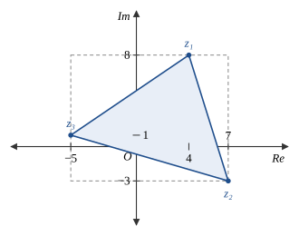
| السؤال | الإجابة النهائية | السؤال | الإجابة النهائية |
|---|---|---|---|
| 1 | $i\sqrt{19}$ | 31 | $\frac{\pi}{2}\approx1.57$ |
| 2 | $\frac{2i\sqrt3}{5}$ | 32 | $-\frac{3\pi}{4}\approx-2.36$ |
| 3 | $\frac{3i\sqrt2}{8}$ | 33 | $-\frac{\pi}{3}\approx-1.05$ |
| 4 | $i\sqrt{53}$ | 34 | $\frac{\pi}{6}\approx0.52$ |
| 5 | $-1$ | 35 | $\approx-0.93$ |
| 6 | $-i$ | 36 | $\approx2.75$ |
| 7 | $14i$ | 37 | $\approx-2.13$ |
| 8 | $-6$ | 38 | $\approx2.68$ |
| 9 | $-4\sqrt2$ | 39 | $2(\cos\frac{\pi}{2}+i\sin\frac{\pi}{2})$ |
| 10 | $-6$ | 40 | $3(\cos\frac{\pi}{3}+i\sin\frac{\pi}{3})$ |
| 11 | $1+i$ | 41 | $7(\cos\frac{5\pi}{6}+i\sin\frac{5\pi}{6})$ |
| 12 | $4+2i$ | 42 | $\cos\frac{\pi}{4}+i\sin\frac{\pi}{4}$ |
| 13 | $2-i\sqrt2$ | 43 | $6(\cos0+i\sin0)$ |
| 14 | $\text{Re}=2,\ \text{Im}=15$ | 44 | $\sqrt2(\cos\frac{\pi}{4}+i\sin\frac{\pi}{4})$ |
| 15 | $\text{Re}=0,\ \text{Im}=10$ | 45 | $z_2=20\sqrt3+20i$ |
| 16 | $\text{Re}=-16,\ \text{Im}=-2$ | 46 | $z=-10+10i$ |
| 17 | $\bar z=-15-3i$ | 47 | $\frac{\pi}{2}$ |
| 18 | $\bar z=8+7i$ | 48 | $8\sqrt2$ |
| 19 | $\bar z=12-17i$ | 49 | $\frac{3\pi}{4}$ |
| 20 | $\bar z=-3+25i$ | 50 | $8\sqrt2$ |
| 21 | $\bar z=-3i$ | 51 | $-\frac{3\pi}{4}$ |
| 22 | $\bar z=15$ | 52 | $\alpha-\pi$ |
| 23 | $|z|=5\sqrt2,\ \bar z=-5-5i$ | 53 | $-\alpha$ |
| 24 | $|z|=6,\ \bar z=3-3i\sqrt3$ | 54 | $\pi-\alpha$ |
| 25 | $|z|=10,\ \bar z=6+8i$ | 55 | $\frac{\pi}{2}-\alpha$ |
| 26 | $x=\pm3,\ y=7$ | 56 | $\frac{\pi}{2}+\alpha$ |
| 27 | $x=1,\ y=2$ | 57 | $m=\sqrt{11}$ |
| 28 | $x=2,\ y=12$ | 58 | $k=\pm4$ |
| 29 | $x=2,\ y=\tfrac15$ | 59 | $z_1=4+8i$ |
| 30 | $0$ | 60 | $60$ وحدة مربعة |